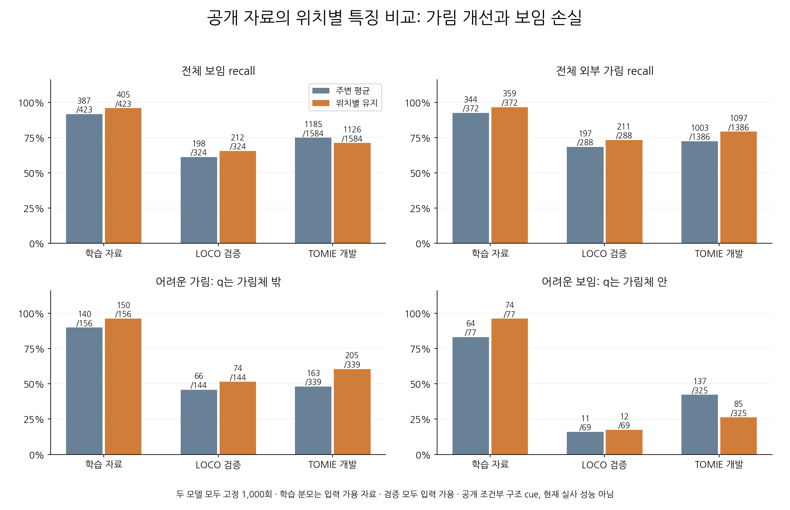
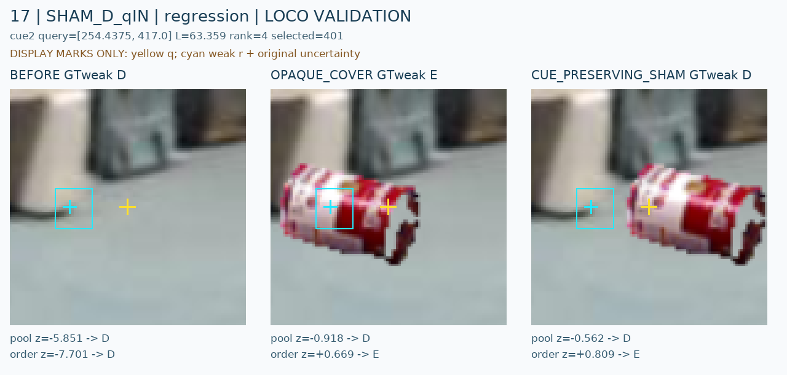

위치별 특징을 유지해도 보임·가림의 균형은 해결되지 않았습니다
공개 검증의 어려운 가림은 229→279/483으로 늘었지만 어려운 보임은 148→97/394로 줄었습니다. 가림을 더 찾는 만큼 보이는 구조도 더 버리는 문제가 남아, 이번 모델을 현재 실사에 채택하지 않았습니다.

학습 자료는6cue/3원본, 검증은26cue/6원본입니다. TOMIE4장은 한 episode입니다. 수천 개 독립 자연 장면의 검증이나 현재 실사의 새 평가로 해석하지 않습니다.
무엇을 실제로 비교했나
같은 frozen DINO local96에서 3×3 간격의 patch 특징을 뽑았습니다. 한 모델은 9개 raw 특징을 평균한 값을 반복해서 받고, 다른 모델은 중앙을 제외한 8개 위치의 특징을 각각 받습니다. 기존1928 특징은 그대로 유지했습니다. 두 head는418,433개 파라미터·같은 초기 상태·같은1,000개 배치·같은 손실과 optimizer를 사용했습니다.
추출4,428개에서 기존 전체crop F와 중앙P 특징이 bit 단위로 일치했습니다. 두 모델의 최초4,896개 점수도 기존 C16과 정확히 같았습니다. 최종1,000회끼리 비교했고 검증으로 checkpoint나 문턱을 고르지 않았습니다.
평균 입력은 반복해도 정보 rank가 늘지 않습니다. 따라서 동일 파라미터 수를 맞춘 ‘개별 위치 정보+집계’ 비교이며 순서 하나만 바꾼 실험은 아닙니다. 첫 추출은 Torch2.1 마스크 API 오류로 중단됐고, 실패 기록을 남긴 뒤 boolean flatten-all로 수정한 별도V2에서 성공했습니다. 정답·입력 조건·허용 오차는 바꾸지 않았습니다.
학습과 별도 공개 검증의 결과
공개 검증 혼동행렬은 아래와 같습니다. 행은 실제 D/E, 열은 예측 D/E/U입니다. 양쪽 모두 검증3,582개에서 보류0입니다.
POOLED9_REPEAT8: [[1383, 525, 0], [474, 1200, 0]]
ORDERED_OUTER8: [[1338, 570, 0], [366, 1308, 0]]
학습 예정 known846개 중 입력을 쓸 수 없는51개는 U로 보존했고795개만 학습했습니다. 별도의 teacherU468개는 학습 손실에서 제외했습니다. 위 학습 recall은 입력 가용 분모이고, 전체 예정 분모와 U는 JSON에 함께 기록했습니다.
판단이 바뀐 실제 공개 crop: BEFORE / COVER / SHAM
24사례의72개 raw crop을 직접 봤습니다. 아래 사례는 캔을 옮겨 지정된 목재 지지부는 드러내고 query q는 캔 위에 남긴 경우입니다. 주변 평균 모델은 보임으로 유지했지만 위치별 모델은 가림으로 버립니다. 노란 표시는 q, 청록은 진단용 weak reference와 불확실성입니다.

반대로 지정된 구조가 가려져도 주변에 목재가 남으면 두 모델이 보임으로 놓치는 사례도 있습니다. 가림체 존재와 특정 구조의 가림을 구별하지 못하는 동작이 반복됩니다. 이 관찰만으로 attention의 원인이나 한 가지 실패 원인을 증명하지는 않습니다.
사례는 검증만 대상으로 고정 규칙으로 골랐으며5cue/3source group에 집중돼 있습니다. 전체 검증 분포는 위 표와 JSON을 봐야 합니다. 청록 기준은 모델에 주지 않았고 실제 native8 인간 정답도 아닙니다.
추가 공개 원본24장 확인
공식 TRAIN subset2에서 촬영 take별로4장씩 선정한 뒤 원본을 추출했습니다. 모두 CRC/JPEG/decoded SHA가 기존 공식 원본 기록과 일치했습니다. 실제 fullframe과 bbox crop을 모두 봤고, 9장은 구조 cue를 더 검토할 만했고7장은 거친 구조만 확인했으며8장은 불명확하게 남겼습니다. 라벨이나 학습 데이터로 자동 편입하지 않았습니다.
가까운 밝은 팔레트, 어두운 낮은 팔레트, 목재 지지부 등 외형 다양성이 확인됐습니다. 재질 정답이나 native8 대응은 확정하지 않았습니다.6take가 서로 독립인 환경이라는 뜻도 아닙니다.
공개24장 원본·native crop 갤러리 · root 실제 검토와 불확실성 기록
현재 실사와 다음 단계
현재 실사의 최신 평가는 여전히 C16: 보임1137/1147, 외부가림35/90입니다. 외부 가림55개를 놓칩니다. 이번 두 모델은 현재 실사에 새로 적용하지 않았습니다. 기존18개 source cohort의 새 stencil도 없으므로 old15 회귀 통과를 주장하지 않습니다.
다음은 공개 원본의 구조 다양성을 실제 학습용 cue로 보강하고, native8 참조와 실제 구조 부위가 명시적으로 연결된 합성 teacher를 구성하는 것입니다. native8 순서 자체는 이미 알려져 있지만, 기존 primary CAD의 부위 endpoint 대응까지 확인된 것은 아닙니다. 기존 합성 생성기의 화면 내 visibility를 외부/자기 가림 정답으로 재사용하지 않습니다.
기하 prototype도 실제로 만들었습니다. 새 board/block 형태와 rib/leg 형태 두 메시에서 native8 참조가 지정한 deck/runner 꼭짓점에 정확히 놓이며, 코너별37개 지지부 표본을 등록했습니다. 알려진 합성 카메라와 같은 불투명 물체의 이동으로 고정 코너의 보임→외부 가림→보임을 ray 검사에서 확인했습니다. 별도의 자기 가림과 부분 불명확 U도 보존했습니다.
새로 구성한 단순 기하 자산입니다. 기존 primary CAD나 실물 팔레트와 동일하다고 주장하지 않습니다. RGB 렌더·현실적인 외형·이 자료로 학습한 성능은 아직 확인하지 않았습니다. 다음은 렌더 결과와 코너별 구조 지지 영역을 실제 이미지에서 검수하는 것입니다.
새 native 참조 등록 기하 prototype · root 메시 대응·ray 재검산
현재 실사 C16 평가와 실제 실패 crop
현재223은 학습·정규화·문턱·checkpoint·arm 선택에 사용하지 않았습니다. 자기 가림은 초기 기하에서 처리하는 방침을 유지하고, PnP/초기 좌표 보정은 수행하지 않았습니다. 목표는 아직 해결되지 않았습니다.
재현·검토 기록
전체 결과 JSON
PNG는 실제 시각 검수하고 HTML 링크와 수치는 정적으로 검사합니다. 브라우저 렌더링 검수를 주장하지 않습니다.